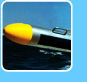

CAPABILITIES
|
|
The R/V VenTresca is a custom built, shallow draft, 35 ft. aluminum hydrographic survey catamaran. [vessel
specs] |
|
The R/V MacGinitie is a 30 ft. trailerable survey
vessel for use anywhere along the US West Coast.[vessel
specs] |
| Multibeam
Bathymetry High-resolution bathymetric mapping.[more info] |
| R/V Albatross Custom-designed SeaRobotics Unmanned Surface Vehicle (USV).[more info] |
| R/V Kelpfly Modified JetSki system with sonar mount.[more info] |
| Marine Laser Scanner A vessel-mounted mobile marine LIDAR system for collecting high-resolution coastal features data (intertidal shoreline, offshore rocks and pinnacles).[more info] |
| Sidescan
Sonar Digital mosaics and substrate classification from acoustic imagery.[more info]
|
 Remotely
Operated Vehicle (ROV) Remotely
Operated Vehicle (ROV)Georeferenced and quantitative video mapping of seafloor habitats and communities.[more info]
|
| SeaBotix LBV 200L ROV Standard MiniROV system with added vertical thrust and stability capabilities.[more info]
|
 Sub-bottom
Profiling Sub-bottom
ProfilingFull spectrum sub-bottom chirp profiling for determination of seafloor sediment and rock layer thickness.[more info] |
 Sediment
Grain Size Analyses Sediment
Grain Size Analyses Automated particle size distribution analyses [particle counts, diameter, and areas with volume and weight representations] for habitat mapping and ground-truthing.[more info] |
| GIS
Analysis and Image Processing GIS layering of raster and vector products, quantitative habitat classification, 3-D rendering and fly-throughs, GIS/video data fusion, with results on CD-ROM.[more info] |
 GPS
Base Station Data GPS
Base Station DataTrimble reference station (TRS) GPS base station data [more info] |
| SFML Data Library Access to SFML data via an HTTP download page. Data are organized by survey location/project and data type. [download here] |